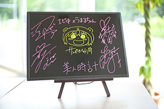

平均年齢16歳の8人組アイドル。通称「エビ中」、自称「King of 学芸会」。
「仮契約のシンデレラ」でデビュー以後、全シングルがオリコントップ10入りを記録。
今年1月にリリースされた2nd full Album『金八』で史上初「Mステに出たい歌」をミュージックステーションにてパフォーマンス。大反響に応えての連続出演で全国の話題を集める。
アリーナクラスのコンサートから、夏の単独野外フェス、各メンバーのTV、ラジオ、映画、舞台、ファッションモデルなど多岐に渡る活動で、「ブレイク必至」の存在として注目を浴びている。
6月17日に最新シングル「夏だぜジョニー」を発売、8月22日（土）には恒例の野外コンサート「ファミえん」を
新潟・長岡市で開催。
出席番号 3番
真山 りか
- 生年月日
- 1996年12月16日
- 身長
- 154.2cm
- 血液型
- A型
- 出身地
- 東京都
- 特技
- マラソン・サッカー・人を笑わせること
出席番号 7番
星名 美怜
- 生年月日
- 1997年11月2日
- 身長
- 159.6cm
- 血液型
- B型
- 出身地
- 神奈川県
- 特技
- チア・リーディング
出席番号 9番
松野 莉奈
- 生年月日
- 1998年7月16日
- 身長
- 169.5cm
- 血液型
- A型
- 出身地
- 東京都
- 特技
- スイミング
出席番号 10番
柏木ひなた
- 生年月日
- 1999年3月29日
- 身長
- 156cm
- 血液型
- B型
- 出身地
- 千葉県
- 特技
- ダンス、側転
-
- 賞品
-

サンカクヘッド先生＆私立恵比寿中学
直筆サインボード - 当選人数
- 1名様
- 応募期間
- 2015年6/19（金）0：00～7/15(水)23:59

ヤングジャンプ公式Twitterアカウント@young_jump をフォローしている方が、応募対象となります。
- 応募締め切り後、厳正な抽選の上、当選者のTwitterアカウントへ
ヤングジャンプ公式アカウント（@young_jump）よりダイレクトメッセージを送付させていただきます。
賞品発送の為にお名前、ご住所、お電話番号等を返信していただきますので予めご了承ください。
ダイレクトメッセージに記載された返信日時までにご返信が確認できなかった場合は、当選権利は無効となりますのでご注意ください。 -
- 応募期間中にヤングジャンプ公式アカウントのフォローを解除した場合は、応募が無効となりますのでご注意ください。
- ツイートの回数によって、当選確率が変動することはございません。
- 当選者は日本国内にお住まいの方で、かつ賞品のお届け先が日本国内の方に限らせていただきます。
- 当選賞品の換金、返品はできませんので予めご了承ください。
- お客様の住所・転居先が不明などで賞品がお届けできない場合は、当選を無効とさせていただきます
※個人情報について
- 当選者よりお預かりした個人情報は本企画遂行以外の目的で利用することはありません。
- 法令により適用を除外されている場合を除き、原則として事前に同意を得ずに第三者に提供することはありません。
-
週刊ヤングジャンプにて好評連載中!!
コミックス1~6巻好評発売中!!
JUMP jBOOKSより8月ノベライズ版発売予定!! -
ABC：7月8日より 毎週水曜26:14～
TOKYO MX：7月12日より 毎週日曜24:00～
BS11：7月12日より 毎週日曜24:30～
AT-X：7月12日より 毎週日曜24:00～
※リピート放送 毎週月曜22：30～/毎週水曜14：30～/毎週土曜6：30～ 
-
週刊ヤングジャンプで大人気連載中『干物妹！うまるちゃん』を、
作者サンカクヘッドが勝手に（？）自分で（!?）スピンオフ（!!?）
本編を読んでから読むと100倍楽しめる♪
本編を読まなくても楽しめる♪
パラレル世界の“うまるちゃんS”ここに見参ッ!!!!!
コミックス1巻 8月発売予定!
©サンカクヘッド / 集英社